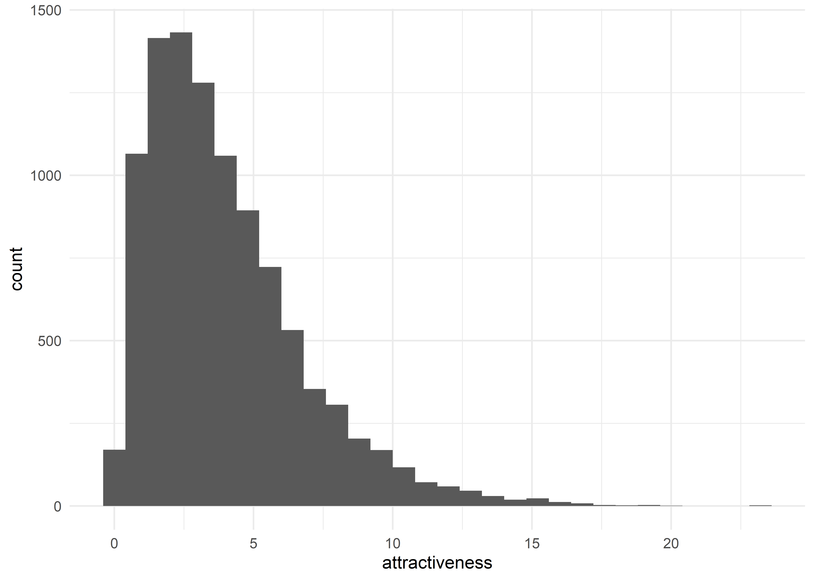

Zentraler Grenzwertsatz
Wenn man hinreichend große Stichproben \((n>30)\) untersucht, muss man die Daten nicht auf Normalverteilung prüfen.
Das sage ich so leicht, aber warum bin ich mir da so sicher? Im allgemeinen linearen Modell (GLM) und den meisten Analysen, die aus diesem entstanden sind (z.B. \(t\)-Tests und ANOVAs), gelten gleiche Voraussetzungen. Die Voraussetzung der Normalverteilung bezieht sich, wie wir bereits kennengelernt haben, nicht auf die Daten an sich, sondern auf die Stichprobenkennwerteverteilung (Bortz & Schuster, 2010; Eid et al., 2017; Field, 2018). Der Stichprobenkennwert, den wir mit am häufigsten untersuchen, ist der Mittelwert. Gemeint ist also, dass die Verteilung dieser Mittelwerte normalverteilt sein muss.
Stellen wir uns einmal eine Grundgesamtheit vor, z.B. “die Europäer”. Wollen wir jetzt bspw. die durchschnittliche Attraktivität der Europäer einschätzen, stoßen wir schnell an unsere Grenzen, weil wir natürlich nicht alle Europäer beurteilen können. Wir bedienen uns dem nützlichen Mittel der Stichprobe. Wir beurteilen also einen Teil der Europäer und versuchen eine Aussage zu treffen. Wir ziehen uns also ein paar Deutsche, Engländer, Italiener, Franzosen, Dänen, Polen, etc. und beurteilen deren Attraktivität. Das machen wir einmal und haben folglich einen Mittelwert. Wo ist jetzt also die Verteilung der Mittelwerte? Nun, wir sind vielleicht nicht die einzige Forschergruppe, die sich für diese Fragestellung interessiert. Irgendwo misst auch jemand anderes die durchschnittliche Attraktivität seiner europäischen Stichprobe. Stellen wir uns jetzt vor, dass es hunderte dieser Messungen gibt und schon haben wir hunderte Stichproben und hunderte Mittelwerte. Für die Voraussetzung der Normalverteiung sollen diese hunderte Mittelwerte nun normalverteilt sein.
Die Verteilung dieser Mittelwerte werden wir nie empirisch erfassen können, weil unsere Fragestellung nicht hunderte Male untersucht wird. An dieser Stelle kommt nun jedoch der zentrale Grenzwertsatz ins Spiel, denn dieser besagt, dass die Stichprobenkennwerteverteilung immer annähernd normalverteilt ist, egal, wie krumm und schief die Ausgangsverteilung ist, wenn die gezogene Stichprobe hinreichend groß ist. Aufgrund dieser Aussage ist heißt er auch “zentraler” Grenzwertsatz, weil er unglaublich wichtig ist.
Und das stimmt jetzt? Simulieren wir doch einfach ein paar Daten und prüfen diese Aussage.
Simulation der Grundgesamtheit
# Generate 10000 data points of a not normal distribution
set.seed(20200425)
population <- tibble(
attractiveness = rchisq(n = 1e4, df = 4)
)
population %>%
ggplot(aes(x = attractiveness)) +
geom_histogram()
Stichprobenziehung
Die Ausgangsverteilung ist eine richtig schön nicht normale Chi-Quadrat-Verteilung mit 4 Freiheitsgraden. der zentrale Grenzwertsatz besagt nun folgendes: Wenn ich aus dieser Population zufällig Stichproben mit einigermaßen großer Größe ziehe (\(n > 30\)) ziehe, dann ist die Stichprobenkennwerteverteilung automatisch annähernd normalverteilt. Für diesen Zweck habe ich eine kleine Funktion geschrieben, die zufällig Stichproben in gewünschter Größe zieht und den Mittelwert dieser einzelnen Stichproben berechnet. Das ganze wird für Stichprobengrößen von 5, 10, 30 und 50 ausgeführt und anschließend lassen wir uns die Verteilungen der Mittelwerte als Histogramme ausgeben.
# Helper Function that pulls a sample of size n, computes the mean of that
# sample and returns it
pull_sample_mean <- function(n) {
sample <- population %>%
sample_n(size = n) %>%
summarise(mean = mean(attractiveness)) %>%
pull("mean")
}
# Pull 500 samples with varying sample sizes
set.seed(20200425)
clt_data <- crossing(id = 1:500, n = c(5, 10, 30, 50)) %>%
mutate(means = map_dbl(n, pull_sample_mean))
# Plot a histogram of the data
clt_data %>%
ggplot(aes(x = means)) +
geom_histogram(binwidth = 0.2) +
facet_wrap(~ n)
Und siehe da: Der zentrale Grenzwertsatz scheint zu stimmen. Mit immer größerer Größe der Sticprobe sehen die Stichprobenkennwerteverteilungen immer “normaler” aus. Wir können also festhalten: Nutzt man Methoden aus dem GLM (z.B. \(t\)-Tests oder ANOVAs) gilt die Voraussetzung der Normalverteilung der Stichprobenkennwerteverteilung. Diese kann ab einer hinreichend großen Stichprobengröße (ca. \(n > 30\)) automatisch angenommen werden. Hat man jedoch kleinere Stichproben, greift der zentrale Grenzwertsatz nicht automatisch und man sollte die Daten auf Normalverteilung prüfen. Denn sind die Daten bei kleinen Stichproben annähernd normalverteilt, können wir auch annehmen, dass die Stichprobenkennwerteverteilung annähernd normalverteilt ist.
Literatur
Bortz, J., & Schuster, C. (2010). Statistik für Human- und Sozialwissenschaftler (7., vollständig überarbeitete und erweiterte Auflage). Springer. https://doi.org/10.1007/978-3-642-12770-0
Eid, M., Gollwitzer, M., & Schmitt, M. (2017). Statistik und Forschungsmethoden: Mit Online-Materialien (5., korrigierte Auflage). Beltz.
Field, A. P. (2018). Discovering Statistics using IBM SPSS Statistics (5th ed.). SAGE.